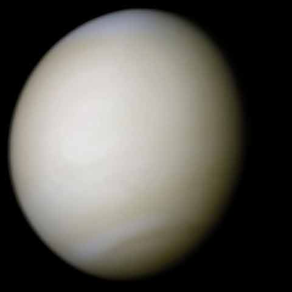

Venus
Venus is the second planet from the Sun, orbiting it every 224.7 Earth days. Venus is a terrestrial planet and is sometimes called Earth's "sister planet" because of their similar size, gravity, and bulk composition. However, it has also been shown to be radically different from Earth in other respects.
Orbital Characteristics
- Aphelion:
- 108 939 000 km
- Perihelion:
- 107 477 000 km
- Orbital period:
- 224.701 d
- Average orbital speed:
- 35.02 km/s
Physical Characteristics
- Mean radius:
- 6051.8±1.0 km
- Mass:
- 4.8676×10^24 kg
- Surface gravity:
- 8.87 m/s^2
- Axial tilt:
- 177.36°